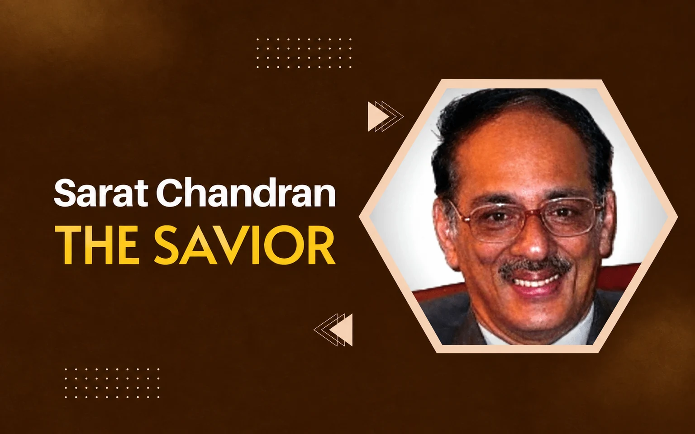

Sarat Chandran : The Savior

Towards the end of the last century, Odisha was almost in red. Most of the states had the same fate. The revenue expenditures exceeded the revenue receipts substantially and the loan burden was not sustainable.
The State had to resort to ways and means advance for around 300 days in a year. There was no money available for development works.
Meanwhile, a new government assumed power at a crucial time. It was the biggest challenge for any government. No solution was at sight.
At such a critical time he came back to Odisha in 2004 after completing central deputation. This was a golden opportunity for the Chief Minister. He wanted to utilize his services to bring the State finance on rail. He was appointed as the Principal Secretary, Finance.
Dr Sarat Chandran was a brilliant student of Economics having a Ph.D. degree from abroad. He had worked in the Government of India in different capacities and served as Private Secretary to Dr Manmohan Singh when he was the Deputy Chairman, Planning Commission. A person of such an illustrious background was an obvious choice to handle the State finance. A tall and handsome guy, he was a very honest and upright person.
As an administrator he was very tough and uncompromising. With the confidence of the Chief Minister enjoyed by him he proceeded to deal with the things with a firm hand.
At the first instance he called the Secretaries of all the departments individually and had a detailed understanding of the schemes and programs implemented by them and their critical issues. Invariably the concerned officers of the Finance Department were present in those meetings. In one such meeting he was reviewing the education sector.
Both the secretaries of Higher Education and School & Mass Education were present with senior officials. I was in that meeting. The crucial issue that emerged in the meeting was with regard to huge arrest salary liability of aided educational institutions as per court orders.
The concerned secretaries urged the Finance Secretary to solve the issue on priority. He carefully listened to their pleadings and had the final say in the matter. It was perhaps the month of November or December.
He informed that as Finance Secretary of the State in the given circumstances he can’t assure payment of salary for the month of February onwards in time and he was not sure whether the persons present in the meeting could ever get pension after retirement. Everyone left the meeting with a gloomy face.
Austerity measures were enforced rigorously. He didn’t entertain any new proposal for purchase of costly vehicles by the departments. Rather he issued a circular for one officer and one vehicle. He himself was using a Maruti 800 car twelve years old without replacing the same during his tenure.
An interesting incident happened on the issue of non payment of arrears salary of teachers as per court order and a contempt notice was issued against him for non compliance of the court’s order. He was asked for personal appearance in the case. He was prepared for the occasion. On the given day he proceeded to Cuttack in his Maruti 800 vehicle and appeared before the Hon’ble High Court.
The Hon’ble Court wanted to know from him the reasons for which their order was not implemented. He politely explained the precarious situation of the State finance and how it was impossible on his part to carry out the orders.
The court took a reasonable view and the proceeding was dropped against him. Forget about the secretaries even the Ministers were not prepared to approach him for anything.
Finance Minister Prafulla Chandra Ghadai used to refer to him as a British type officer. In fact he was a strict disciplinarian. Once a meeting was fixed in his chamber with representatives of a foreign agency. We were present in his chamber at the right time.
They were five minutes late and got a dressing down from him for the delay. He stood like a rock against the adverse conditions of the State and gradually things started looking bright thanks to his timely interventions and reform initiatives. In fact like a savior he rescued the State Government from the financial crisis.
In June, 2006, he was promoted to the rank of Additional Chief Secretary and got appointed as Development Commissioner with additional charge of ACS, Finance. However, within a few months he got an offer from the International Monetary Fund and resigned from IAS.
He applied for voluntary retirement which was allowed to him in November, 2006. After retirement he left for Kerala, his home State. At the personal front he observed the economy in expenditure and was against extravagance.
Before leaving he disposed of most of the old belongings through auction sale at his residence and the staff members availed the benefit of purchasing those items at a throw away price. Then he booked the essential commodities through the transport agency and finally boarded the train with his wife without going for an air journey.
While bidding farewell to him at the railway station I was pondering about the life and philosophy of the great man who was truly an exception for most of us.
Leave a thought
No account needed. Comments are reviewed before they appear. Your name and approved comment will be public.